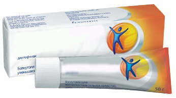

Vaistinių savivalė.Vilniuje, arba kaip mūsų godūs vaistininkai slėpė Europoje parduodamiausią preparatą sąnarių gydymui!
Jau 2 metus Europos rinkoje parduodamas stebuklingas preparatas sąnarių gydymui –
. Pagal efektyvumo jis keletą kartų viršija analogus – duoda ne tik greitą efektą
po vartojimo pradžios, bet ir atstato natūralią sąnarių funkciją, ir neturi pašalinių
efektų (visiškai).
Pateikiamoje lentelėje lyginame du preparatus
 |
 Priemonės iš vaistinės |
|
|---|---|---|
| Veikimas: | Skausmų priežasčių šalinimas, sąnarių funkcijų paleidimas iš naujo ląstelių lygyje | Laikinas nuskausminantis veikimas |
| Papildomi efektai: |
º Kraujotakos atstatymas nesveikuose sąnariuose º Kraujagyslių stiprinimas º Kupiruoja skausminį sindromą |
Nėra |
| Pašaliniai efektai, kenksmingi organizmui |
Nėra | º Odos apraiškos tepant º Pustuliozinės dermatozės º Bronchospastinės reakcijos º Eritema, dermatitai |
| Veikimo principas: | Gerina kraujotaką tepimo srityje ir stimuliuoja nervų galūnes, paleidžia ląstelių atstatymo procesą | Nuskausmina odą, dažnai neįsigerdamas į reikalingą gylį be papildomų ultragarsinių poveikių |
| Sudėtis: | Natūralūs augaliniai komponentai ir vitaminai | Diklofenakas ir kiti komponentai, gauti cheminiu būdu |
| Vieta Europos Pardavimų reitinge už 2017 m 1 kvartalą: | 1(+53) | 2(-1) |
Tai preparatas, kuris trumpiausiais terminais, tiesiog nuo 4 dienų, leidžia pamiršti apie nugaros ir sąnarių skausmus, ir per porą mėnesių išgydyti net labai sudėtingus atvejus.
Preparatas susideda iš natūralių bitininkistės produktų. Gelis patepama probleminė kūno vieta, tai padeda atsikratyti nugaros ir sąnarių skausmų. Atstatymo procesai vyksta be operacijų.
Net patepdami vieną kartą, jūs aktyvuojate apie 930 000 ląstelių, tai naudinga jūsų kraujotakai, taip gydymas ir vyksta. Čia svarbiausia yra reguliarumas.
Europoje padarė tikrą perversmą tarp sąnarių gydymo priemonių. Tokio naudingos ir efektyvios priemonės dar nebuvo. Ji atsirado 2017 metais, prieš ją sukuriant, daugiau nei 6 metus buvo atliekami klinikiniai tyrimai. Beveik iškart po atsiradimo rinkoje perviršijo analogus pagal visus rodiklius ir šiandien yra parduodamiausias preparatas sąnariams gydyti.
Bet kas vyksta Lietuvoje?
Iki šiol jo nėra Lietuvos vaistinėse (ir greičiausia, nebus). Net atsižvelgiant į tai, kad su juo sėkmingai atlikti klinikiniai tyrimai Vilniaus universiteto laboratorijoje ir gauti visi reikalingi sertifikatai. Kodėl taip vyksta su šiuos unikaliu preparatu?
Mes pasikalbėjome su vienu iš stambaus vaistinių tinklo savininkųVilniuje– Germanu Abramavičiumi, ir va, ką jis atsakė. Tai yra neįsivaizduojama!

- Pone Germanai, kaip pakomentuosite, kad Europoje žinomas preparatas iki šio laiko neparduodamas Lietuvos vaistinėse? Ar jūs žinote jį?
- Taip, žinau. yra geras preparatas. Jis tikrai padeda grąžinti sąnarių normalią būseną, ir trumpiausiais terminais, ir mes pardavėmė jį maždaug mėnesį, bet vėliau nutraukėme pardavimą. Mums tiesiog nepelninga jį parduoti, taip gi pat, manau, įvyko ir kitose vaistinėse.
Reikia suprasti, kad vaistinės yra pirmiausia komercinės organizacijos, kurių tikslas, kaip ir bet kurių parduotuvių, yra gauti maksimalias pajamas. Taip, mes turime vaistų, kurie būtinai turi būti parduodami (šį sąrašą sudaro valstybė), sąrašą, bet nėra šiame sąraše.
- buvo blogai parduodamas?
- Atvirkščiai, pernelyg gerai, net su dideliu antkainiu. Suprantate, sąnariams skirtos priemonės, atsižvelgiant į ligonių skaičių šiandien, duoda dideles įplaukas. Gi atstato sąnarių natūralias funkcijas, kurias žmogus turėjo prieš atsiradus ligai. Todėl žmonės išgyja ir nebeeina į vaistinę pirkti analogiškas priemones, tik nuimsiančias skausmą neilgam laikui, ir vėliau jie vėl turi pirkti šiuos preparatus skausmui nuimti, ir taip ratu. Bet naudojant , jiems nebereikia taip daryti. Todėl vaistinės turi nuostolius, ir reikšmingus.
O kodėl parduoti kažką, jei tai nėra pelninga? Pagalvokite patys. Taip, galbūt tai
nėra labai gerai iš moralinio požiūrio, bet tai tik biznis.
O juk tikrai!
Kodėl neparduoti tai, kas padeda tik laikinai? Taip ir žmonės grįš... Tai yra baisu. Ir tokia situacija būdinga visiems Lietuvos miestams. Lietuvos vaistinėse tiesiog negalima surasti , ir netodėl, kad jis blogai padeda, o atvirkščiai, pernelyg gerai, kaip paradoksalu tai neskambėtų! Ir su tuo nieko nepadarysi – įstatymai yra farmaceutų pusėje.
Duoti komentarą apie preparatą mes paprašėme žinomą Lietuvos reumatologą – Andrių Balį
Medicinos mokslų daktaras, profesorius Andrius Balys
"...Dėl minėtos priemonės veikimo – atsakymas yra paprastas – atstatę sąnario aprūpinimą krauju, mes jį išgydome!
Daugelis žmonių klaidingai mano, kad atstatyti aprūpinimą kraujo po 45 metų yra beveik negalima.
Vyresni nei 40 metų žmonės, kurių ligos atsirado “su amžiumi“, susiduria su labai panašiomis problemomis: osteochondrozė, skoliozė, išvarža, radikulitas, nervo sugnybimas ir kt. Šios ligos vargina ir trukdo gyventi. Jie verkia, jiems skauda, daugelis negali greitai vaikščioti dėl stiprių skausmų, kažkam vaikščioti yra sunku. Ir tai paprasti žmonės – ne sportininkai ir dar ne invalidai. Ir skundžiasi - "už ką tai man, kodėl aš?".
BET! Reikia nesiskųsti, bet atstatyti aprūpinimą krauju.
Iki neseno laiko efektyvus gydymo būdas buvo pratimų kompleksas, atliekamas su treniruokliais, bet tai labai sunkus ir ilgas metodas. Žmonės skauda, sunku, jiems netenka jėgų ir laiko aplankyti salę, jie greitai pasiduoda.
Tokiems žmonėms idealiai tiks lengvesnis būdas – naudoti "".
Su Sveikatos apsaugos ministerija parama atlikta apklausa, kuri perviršijo mūsų lūkesčius
Sveikatos apsaugos ministerijos apklausa: kaip jūs atsikratėte sąnarių problemų?
23%
47%
8%
17%
5%
Mes senai naudojame savo praktikoje ir gavome įtikimus įrodymus, kad šis preparatas yra efektyvus. Klinikiniai tyrimai įrodė šio natūralaus preparato saugumą, todėl aš labia rekomenduoju naudoti , o ne sintetines nuskausminančias priemone ir nemaitinti godžių prekybininkų..."
Kadangi vaistinėse nepanorėjo parduoti dėl žemo pelno, tai gamintojas, norėdamas pats pritraukti paprastų žmonių dėmesį, griebėsi kraštutinių priemonių – promo akcijos trukmės metu laikinainustatė lengvatinę kainą už vieną pakuotę.
lengvatine kaina prieinamas visiems Lietuvos Respublikos gyventojams iki (įskaitant). Būtent iki šio termino reikia svetainėje palikti paraišką
Pakanka tiesiog palikti savo kontaktinius duomenis ir jūs smulkiai pakonsultuos visais dominančiais klausimais.
Svarbu! Tyrimai parodė, kad Liepa yra geriausias laikas pradėti gydyti sąnarius. Kadangi vidutinė temperatūra normalizuojasi, preparatas įsisavinamas 45 proc. greičiau, nei tai vyksta kitu metų laiku. Organizmo funkcijų atstatymas ir sąnarių išgydymas vyksta 100 proc. per visą gydymo kursą. Svetainėje taip pat yra smulkus preparato aprašymas, jo sudėtis, parašyta, kokiais atvejais jis padeda labiausia, ir į kokius simptomus reikia atkreipti dėmesį kuo anksčiau.

Mano darbas yra fizinis. Nuolat po pamainos skaudėjo sąnariai. Perskaičiau gerų atsiliepimų apie ir užsisakiau. Nelaukiau ypatingo rezultato, bet kitą dieną po naudojimo pradžios pajaučiau, kad tapo žymiai lengviau! Tapau judresnis, sąnariai "nebemaudžia". Rekomenduoju!
Ir siuntą Vilniujegavau labai greitai.

Užsakiau žmonai prieš 2 mėnesius. Turėjo nugaros skausmus. Sakė, kad skausmas visiškai praėjo. Po gydymo kurso dar ne kartą ne skaudėjo. O aš džiaugiuosi, kad ji name daugiau daro:)

Užsisakiau kursą, nes nuolat skauda kojo keliuose. Labai džiaugiuosi, kad paspėjau pirkti pagal akciją už 1 eurą!

Viena pažįstamoji darbe gydėsi su . Labai gerai apie jį atsiliepė. Ir aš patebėjau kad ji jau neberaišuoja. Dabar užsakiau sau ir žmonai, kol akcija trunka. Ačiū!
.jpg)
Žinau apie šį stebuklingą preparatą! Per paskutinius 5 metus perbandžiau visus tepalus, pleistrus ir tabletes – nieko nepadėdavo. Gerai, kad sėsuo patarė . Kaip ranka nuėmė problemas su nugara is kojų sąnariais!
Puikus gelis! Patepu sąnačius tik savaitę, o jau jaučiuosi reikšmingai geriau. Tęsiu, kad visiškai atstatyti sąnarius.

Visiškai patvirtinu! yra super priemonė. Sąnarių
problemos paskutiniais metais atsirasdavo vis dažniau. Tik neseniai sužinojau apie . Po
naudojimo jau per pirmą savaitę pajaučiau, kad galiu gyventi kaip normalus žmogus, tiesą sakant,
nelaukiau jau, kad man kažkas gali padėti. Rekomenduoju visiems! Ši priemonė jūs maloniai
nustebins.
O man duktė užsakė. Niekuomet netikėjau šiais šiuolaikiniais preparatais. Bet čia turiu pasakyti – geriau už man niekas nepadėjo!
Dėkui. Paspėjau užsakyti pagal promo akciją! Tikrai už 1 eurą, ir pristatymas greitas įVilniųpaštu, patogu!
Strėnos skaudėjo visą gyvenimą. Paveldėtinė problema. Apėjau jau visas ligonines, visus masažuotojus ir liaudies gydytojus. Paskutiniais metais jau raištelius sunkiai surišdavau. Perskaičiau apie daug gero, bet bijojau užsakyti. Ir veltui. Dabar gailiuosi, kad anksčiau nepradėjau naudotis. Tokioje geroje būsenoje nugara nebuvo nuo 17 metų! Patariu pabandyti.
Užsisakiau . Operatorius sakė, kad pagal akciją liko mažai pakuočių. Jeigu norit paspėti - paskubėkit!
Gydytojai gydo mane jau 3 metus. Tikiuosi, padė. Įforminau užsakymą, mergina telefonu mandagiai pakonsultavo. Lauksiu siuntą.
Nuo vaikystės turėjau artritą, deja, visi vaistai ir procedūros galėjo tik laikinai užtikrinti kažkokią palengvinimą. Aš taip pavydėjau klasiokams, kurie kūno kultūros užsiėmimuose galėjo bėgioti, žaisti tinklinį... Man tai tapo prieinama 38 metų amžiuje, kai aš atsikračiau savo ligos panaudojęs . Šiandien gavau didžiulį pasitenkinimą atlikdamas nedidelius pratimus ir vesdamas aktyvų gyvenimo būdą!
Išėjas iš sunkiosios atletikos kaip sporto meistras, nes ligos jau nebeleido eiti
toliau. Tie, kas užsiėmė, mane supras – po varžybių buvau jau visas „muštas“. Po to dirbau
statyboje, šiaip jau – sąnariai buvo kaip 70 metų senolio. Gydytojas patarė man atlikti
kursą, aš perskaičiau – atsiliepimai atrodė neblogai, nusipirkau ir gydžiausi. Ir tikrai, pamažu
sąnariai grįžo į normą! Pakartotinai darau nuotrauką – praktiškai visas audinys visiškai atsistatė.
Į didįjį sportą jau, žinoma, nebegrįšiu, bet treniruoklių salę aplankau su noru ir jaučiuosi
budrus.
Žmonės, užsakykite - nepasigailėkite!
Užsisakiau šį gelisą (gaila, kad tuomet akcijos nebuvo). GavauVilniujelabai greit. Rezultatas nustebino. Visi skauduliai susiję su sąnariais dingo. Iki tol kelius metus skaudėjo keliai ir nugara.